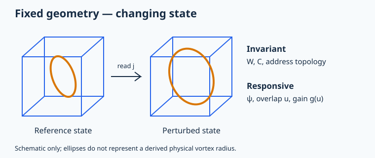

Overlap susceptibility:
Central coordinate derivative:
Critical curvature: 6.7855
Local stationary derivative, fixed norm and geometry. No derived physical radius, gravitational source or relaxation dynamics.